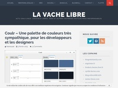

Projets
Compétences
Web
HTML5
CSS3
Javascript
jQuery
PHP
CMS / Frameworks
Wordpress
Laravel
Logiciel
Python
Outils
Git
MySQL
Études
-
Licence Informatique 1
2016/2017
Université d'Orléans, Orléans -
Baccalauréat Scientifique
2015/2016
Lycée Jacques Monod, Saint-Jean-de-Braye
Références

Article de «La Vache Libre» à propos de Coulr
Lire l'article
Startpage de la distribution HandyLinux basée sur TuxHomepage
Voir la page
Vidéo de présentation de TuxHomepage par Scott Viger
Regarder la vidéo
Contact
hugo.posnic@gmail.com
Adresse
Orléans, France